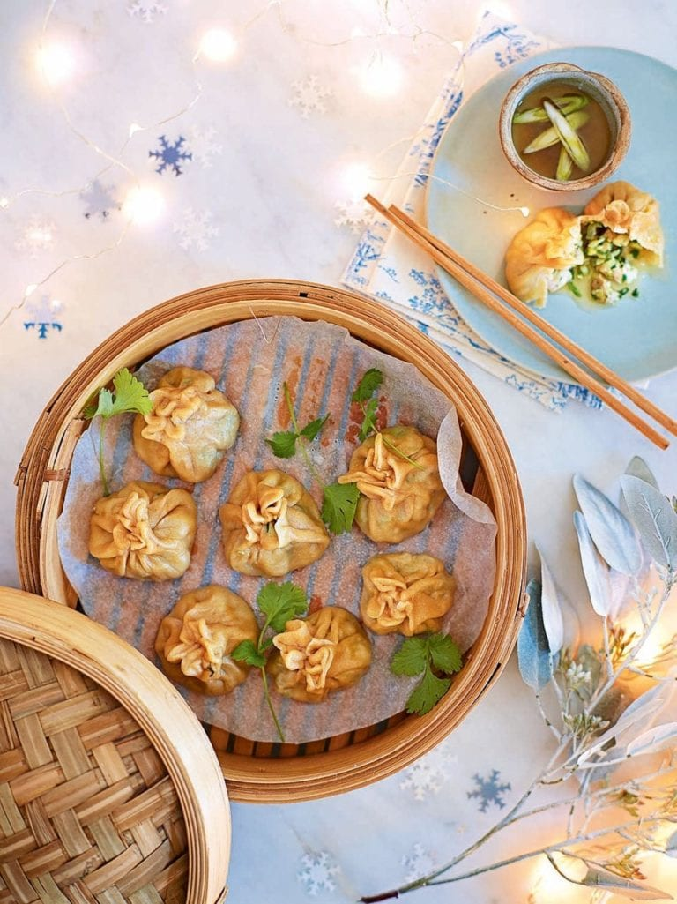

Chicken Momo

Tibetan styled steamed cooked chicken momo recipe
Chicken momos are steamed dumplings that originated in Tibet and Nepal.
They work well as a canapé recipe to serve at parties or a make-ahead starter recipe and this recipe will make about 30 dumplings.
Ingredients
- Boiled Chicken 300g
- Flour 450g
- Ginger 1 inch
- Salt 1/2 tsp
- 1 Green chilli
- Soy sauce 1 tsp
- Water, as per the requirement
Cooking Instructions
- Wash the herbs and chicken in a separate tumbler, now rinse it with warm water and chop all the vegetables and keep them aside separately.
- On the other hand, put water in a pan or pressure cooker and boil the chicken further add a pinch of salt and pepper as it cooks.
To bring more flavour, you can also add some garlic and onion paste. As soon as the chicken boils, transfer it to a bowl and shred it into fine pieces.
- When preparing the dough in the chicken momo recipe, add the refined oil in the flour and mix it with salt.
Add water and make a smooth dough. Make sure that you do not make any lumps while forming the dough. Meanwhile,
leave the dough aside and bring the main course. Mix all the vegetables with the shredded chicken. Add the soy sauce and see how the colour changes.
Stir the mixture well. Take the dough and roll it into balls.
- Now flatten the balls and add the chicken veggie mixture in the centre.
Overlap the edges of the dough and secure it to make a momo. Repeat the same with other balls.
Further, put the chicken momo in a steamer and leave it for 20 minutes.
Once the momo turns tender, scoop it up into a platter and serve it with spicy chutney. Now your chicken momo is ready to be eaten.
- So, these are the ingredients and the method that Gurkha Durbaar uses to serve its customers.
You can enjoy this delectable food item along with your family and friends at your comfort zone.
But, keep in mind that you can experience the ultimate taste only if you eat it when the chicken momo is warm.